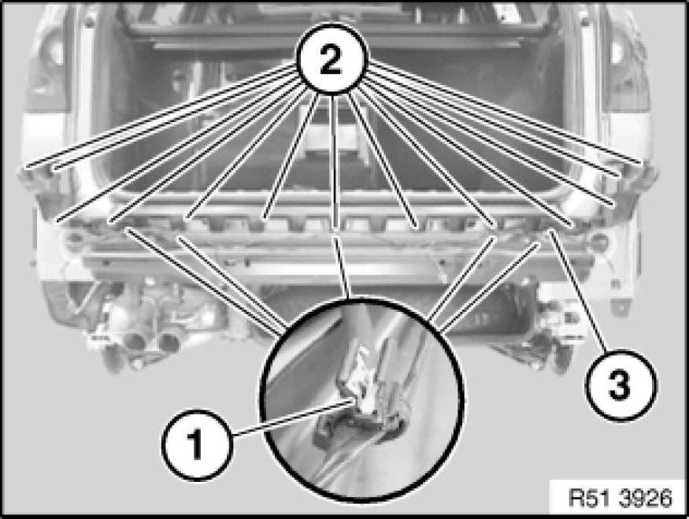

51 12 825 - Removing and installing/replacing guide for rear center bumper
51 12 825 - Removing and installing/replacing guide for rear center bumper

Necessary preliminary tasks:
- Remove rear bumper trim

Version with Park Distance Control:
If necessary, release cable holders (1) and lay cable to one side.
Unfasten screws (2).
Remove guide (3).
Installation:
If necessary, replace damaged cable straps (1).
Tightening torque 51 12 10AZ [1][2]Rear Bumper.